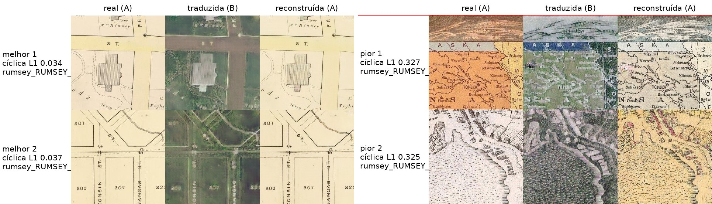
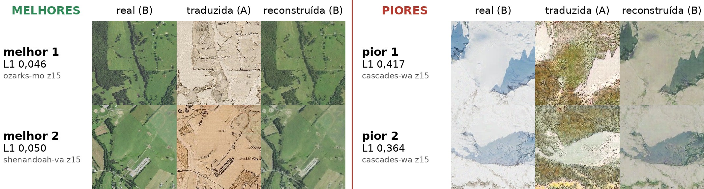

APRENDIZADO NÃO-SUPERVISIONADO · PUCRS · PROF. LUAN GARCIA
Mapas históricos ↔ satélite
Uma CycleGAN treinada do zero para traduzir imagens entre dois domínios, sem pares
João Henrique da Luz · Vittor Brits · Marcelo Novembro de 2026
A TRADUÇÃO ESCOLHIDA
Dois sentidos, sem nenhum par de treino
A → B Mapa histórico → satélite
Dado um recorte de mapa antigo, gerar como aquela região apareceria vista de cima, em uma ortoimagem.
B → A Satélite → mapa histórico
Dada uma foto aérea, desenhá-la no estilo de um mapa antigo: papel, traço de tinta, cor chapada e rótulos.
Por que é interessante e difícil
Os dois domínios mostram a mesma coisa (ruas, quadras, rios, ferrovias), mas o mapa é uma abstração com texto, e a foto tem textura que o mapa não registra (telhados, copas, sombras). A tradução não é bijetiva: um sentido precisa descartar informação e o outro precisa inventá-la.
DATASET
Mapas históricos (A) e satélite (B), 256 × 256
A · treino 6.099 · teste 1.056 · nenhum mapa do teste no treino B · treino 6.586 · teste 947 · só Baltimore (162) é inédita
A David Rumsey
API do acervo, 12 termos: 720 mapas → recortes de 1024 px reduzidos a 256 → filtros + limpeza CLIP → 7.155 recortes (650 mapas, CC BY-NC-SA)
B USGS NAIP
Tiles ~1 m/pixel, 36 cidades + 16 áreas naturais, zooms 14–16: 8.360 tiles → filtro (sem cobertura, água, uniforme) → 7.533
Pré-processamento: JPEG RGB, normalizado para [−1, 1]; sem augmentation (o flip espelharia o texto). Scripts em coleta/.
IMPLEMENTAÇÃO
ResNet + PatchGAN, LSGAN e perda cíclica
Gerador ResNet-9: blocos residuais preservam a estrutura (ruas) · InstanceNorm vai bem com batch 1. Discriminador PatchGAN 70 × 70: julga textura local, poucos parâmetros.
Termo
Escolha
Por quê
Adversarial
LSGAN, sem sigmoid
Gradientes estáveis; perda do D × 0,5
Consistência cíclica
L1, λ = 10
Permite treinar sem pares: a volta recupera a entrada
Identity
Desligada, λ_id = 0
Pouco natural entre mapa e foto; ablação ficou como trabalho futuro
Ruim manchas rosa; traço pesadoBom quadras e prédios preservadosBom malha fina, estilo de gravuraRuim árvores somem: papel e pseudo-texto
RESULTADOS · TESTE INTEIRO · 2 MELHORES E 2 PIORES POR DOMÍNIO
Casos bons e ruins pela cíclica L1

A→B melhores: mapas cadastrais creme; texto continua. Piores: mapas coloridos; a cor não passa pelo ciclo.

B→A melhores: mata e campos viram papel quase vazio e voltam. Piores: neve das Cascades, sem equivalente em mapa.
ANÁLISE CRÍTICA · FALHAS 1 E 2
Texto não some; mapa → satélite é o sentido difícil
FALHA 1 · EVIDÊNCIA
“CANAL”, “LEMBERG” e lotes “404/405” continuam como letras sobre o satélite; em B→A surge escrita cursiva sem sentido.
HIPÓTESE
Satélite não tem equivalente de texto; apagar custaria perda cíclica e o PatchGAN 70×70 tolera letras pequenas. D_A espera rótulos e G_BA os inventa.
FALHA 2 · EVIDÊNCIA
D_B cai de 0,20 a 0,01 e G_adv A→B sobe a 0,96; as saídas A→B são lavadas, com textura repetitiva (mar vira copa de árvore).
HIPÓTESE
Assimetria de informação: foto→mapa descarta detalhe; mapa→foto precisa inventar telhados, copas e sombras. O G cai numa textura média que o D_B reconhece.
Como testar: contar texto nas saídas do teste; treinar com recortes sem texto ou mascarar o texto na perda cíclica; reduzir o aprendizado de D_B.
ANÁLISE CRÍTICA · FALHA 3
Reconstruções quase perfeitas a partir de traduções ruins
EVIDÊNCIA
Nos 8 casos de teste a reconstrução é fiel, mesmo quando a tradução falha. O bairro arborizado vira quase papel vazio, mas a reconstrução devolve as copas.
HIPÓTESE
Esteganografia (Chu et al., 2017): o gerador esconde a imagem original em sinais de baixa amplitude e o outro gerador os decodifica. A perda cíclica cai sem a tradução ficar fiel.
TESTE
Somar ruído (σ = 0,02 e 0,05) à tradução antes do segundo gerador.
SENSIBILIDADE (limiar 3,0)
A, σ = 0,02
2,93
A, σ = 0,05
3,62
B, σ = 0,02
0,83
B, σ = 0,05
1,0
A→B→A amplifica o ruído; B→A→B não. Confirma só em parte.
Só 50 imagens e dois σ: indício, não prova.
CONCLUSÃO
A CycleGAN aprendeu o estilo e a estrutura, mas não aprende a inventar o que falta
Satélite → mapa funciona melhor
Descartar detalhe é fácil: ruas e quadras viram traço de mapa convincente.
Mapa → satélite fica limitado
É preciso inventar textura que o mapa não tem, e o discriminador de satélite vence.
Perda cíclica baixa não basta
Reconstruções perfeitas a partir de traduções ruins sugerem informação escondida.
Próximos passos: ablação com identity loss, máscara de texto e mapas e satélites da mesma região e escala.
Limitações: 1 execução (seed 42), sem FID, B do teste quase todo visto no treino, domínios desalinhados em escala e região.